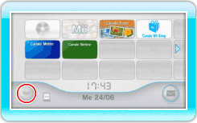
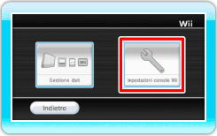
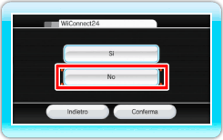

|
Per proteggere la tua privacy, durante la comunicazione con altri utenti non fornire informazioni personali come il tuo cognome, numero di telefono, data di nascita, scuola, età, indirizzo e-mail o di casa.
L’Accordo per l’utilizzo dei servizi Internet Wii che disciplina il gioco online tramite la console Wii e spiega la politica sulla privacy dei servizi Internet Wii è disponibile all’interno delle impostazioni della console Wii e all’indirizzo Internet wii.nintendo-europe.com/terms
 |
|
 |
|
Avvertenze riguardo all’uso di Pay & Play attraverso la Nintendo Wi-Fi Connection e WiiConnect24 |
|
 |
|
 |
Questo gioco ti permette di collegarti a Internet per accedere a sfide e classifiche gratuitamente, oltre che scaricare servizi e contenuti aggiuntivi in cambio di Wii Points™. Per ciò che concerne questo servizio, tieni a mente le informazioni che seguono:
- Il collegamento a Internet potrebbe permettere ad altri utenti di vedere le informazioni inserite (come i nomi dei propri personaggi). Per questo motivo, quando accedi a Internet non inserire informazioni importanti che potrebbero portare alla tua identificazione o parole che potrebbero mettere a disagio altre persone.
- Il codice amico e il codice Wii fanno parte di un servizio che ti permette di giocare in maniera sicura con persone che conosci bene. Qualora scambiassi il tuo codice amico o il codice Wii della tua console con estranei tramite bacheche Internet o altri mezzi, correresti il rischio di ricevere informazioni errate o messaggi contenenti linguaggio offensivo. Non rivelare né il tuo codice amico né il codice Wii della tua console a persone che non conosci.
- Non intraprendere attività che potrebbero causare danni agli altri giocatori, come ad esempio la contraffazione dei dati di gioco. Se venisse riscontrato tale comportamento, potresti subire una penalizzazione, come ad esempio l’esclusione dall’accesso ai servizi.
- Nel caso in cui fosse necessario effettuare lavori di manutenzione a causa di problemi imprevisti, i server di gioco Pay & Play della Nintendo Wi-Fi Connection e di WiiConnect24™ potrebbero risultare temporaneamente non disponibili. Inoltre i servizi forniti per i software compatibili con la funzione Pay & Play della Nintendo Wi-Fi Connection e con WiiConnect24 potrebbero in futuro venire interrotti. Per maggiori informazioni visita il sito Internet wii.nintendo-europe.com
- Nintendo declina ogni responsabilità in merito a problemi derivanti dalla connessione al servizio Pay & Play della Nintendo Wi-Fi Connection o a WiiConnect24 e dall’impossibilità a collegarsi da parte degli utenti.
|
|
|
|
Avvertenze riguardo al download di contenuti aggiuntivi tramite Pay & Play con la Nintendo Wi-Fi Connection |
|
|
|
|
Questo gioco ti permette di collegarti a Internet e scaricare contenuti aggiuntivi (in forma di dati o di servizi) a pagamento tramite Wii Points. Tieni a mente le informazioni che seguono quando acquisti licenze per contenuti aggiuntivi:
- Il download di contenuti aggiuntivi è regolato dall’Accordo per l’utilizzo dei servizi Internet Wii, incluso l’Accordo per l’utilizzo del Canale Wii Shop. Per maggiori informazioni, visita il sito Internet wii.nintendo-europe.com/terms
- Le licenze per contenuti aggiuntivi sono vendute da Nintendo.
- Per poter scaricare tali contenuti, sono necessari Wii Points (si tratta dunque di un servizio a pagamento).
- Per informazioni su come acquistare Wii Points, consulta il Canale Wii Shop o il sito Internet wii.nintendo-europe.com
- Per controllare i nomi dei contenuti aggiuntivi scaricati, la data di acquisto e i Wii Points usati, accedi al RIEPILOGO DELLE OPERAZIONI del Canale Wii Shop.
- Per controllare quanti Wii Points hai ancora a disposizione, consulta il Canale Wii Shop.
- Se non hai a disposizione Wii Points a sufficienza, non potrai acquistare la licenza per i contenuti aggiuntivi. Per effettuare l’acquisto, aggiungi Wii Points all’interno del Canale Wii Shop.
- Quando acquisti una licenza, i contenuti aggiuntivi vengono salvati nella memoria della console Wii. Se non c’è abbastanza spazio libero nella memoria della console Wii, non potrai acquistare una licenza per contenuti aggiuntivi. In tal caso, crea spazio nella memoria della console Wii cancellando alcuni dati o trasferendoli in una scheda SD. Per maggiori informazioni, consulta il manuale di istruzioni della console Wii: canali e impostazioni.
- Non è possibile farsi rimborsare, restituire o cambiare le licenze per contenuti aggiuntivi acquistate.
- Dopo aver acquistato una licenza per contenuti aggiuntivi, anche se venissero eliminati, potrai scaricarli di nuovo gratuitamente.
Nota: l'accesso ad alcune funzioni può essere limitato attraverso le impostazioni filtro famiglia e WiiConnect24 della tua console Wii. Per informazioni, vedi la sezione "5. Filtro famiglia" e "Disattivare WiiConnect24" in fondo alla pagina.
Segui questa procedura per disattivare WiiConnect24:
-
 Seleziona l'icona Wii in basso a sinistra nel menu Wii; apparirà lo schermo opzioni Wii.
-
 Seleziona IMPOSTAZIONI CONSOLE Wii, poi WiiConnect24.
-
 Per disattivare la funzione WiiConnect24, seleziona dapprima l'opzione Sì/NO, poi NO e infine CONFERMA.
Nota: puoi anche scegliere di non ricevere messaggi relativi a un software. Per farlo, punta il telecomando Wii verso  in alto a destra e premi  , poi seleziona QUESTO SERVIZIO INFORMAZIONI.
| |